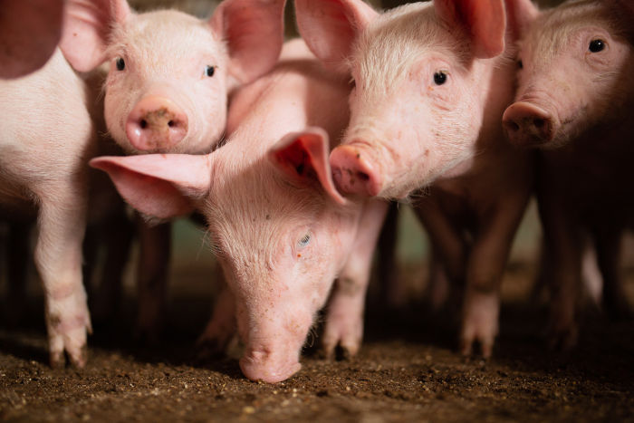
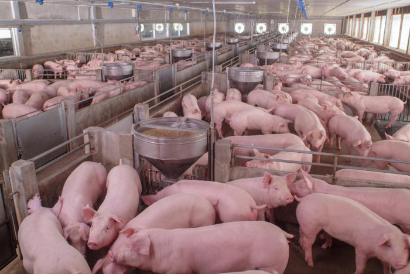

O que é Suinocultura?
É a area da zootecnia que cuida da criação de Porcos, são produzidos em sistema intensivo armazenando os porcos num local previamente instalado para deixa-lo confinado, oferecendo alimentação de qualidade balanceada especificamente para cada fase do animal, tudo para que ele possa ganhar bastante peso e ficar com uma carne de boa qualidade sem grandes quantidades de gordura, são confinados em uma estrutura considerando o local em que estão, levando em consideração também a temperatura do local para ser agradável ao animal e bem ventilado, e com uma proteção para a luz solar durante todo o dia.
O que o zootécnico faz nesta área?
- Maneja os animais
- Realiza análises nos animais
- Produz rações de qualidade nutritiva
- Detectar problemas comportamentais nos animais
- Identifica comportamentos de reprodução
- Adapta os animais ao clima
- Realiza o manejo de animais em crescimento
- Busca trazer bem estar aos animais

Fases do animal
São animais que possuem cuidado em todas as fazes para propiciar um bom crescimento
Creche
Ao nascer os suínos são levados a creche, local onde ficam para poder reduzir o estresse do animal após a desmama, deixando próximo a mãe do animal para o bem estar tando da mãe quando para o filhote, e neste momento começa a acostumar os leitões a ração, por serem bem sensiveis a temperaturas é mantido uma temperatura de 20 a 24 graus, em ambiente mais fechado, deixando nessa instalação até próximos dos 63 dias
Recria e terminação
Após a saída da creche os animais passam para a recria, onde o animal é alojado em local fechado e alimentado com a ração de boa qualidade diariamente o dia inteiro, até o período do seu abate com cerca de 110 dias, chegando a uma média de peso de 90 a 120 quilos.
Reprodução
A reprodução é feita em um outro local separado de onde os animais se alimentam, onde é abrigado as fêmeas, e é inserido os machos juntamente neste local para poder estimular o cio, e assim é feito a reprodução, colocando a cerca de 4 a 6 fêmeas por local, separando o local por semanas.
